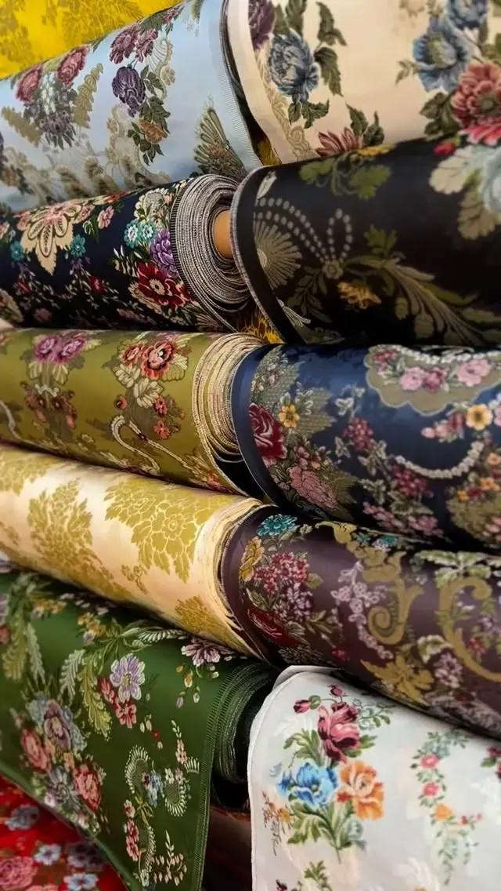

Tienda Centro
C/ Burriana, 21
46005 Valencia
✦ Telas exclusivas
Brocateles y damascos exclusivos, de seda natural o de rayón, cada dibujo con su nombre. Con ellos te confeccionamos el traje a medida en nuestro taller.
✦ En la tienda
Cada dibujo de nuestra colección tiene su nombre: Calanda, San Manuel, Cestas, Guadalquivir… Los hay en brocatel y en damasco, de seda natural o de rayón.
Son telas exclusivas de la casa, y Noelia y María han participado en el diseño de nuevos dibujos. No las vendemos sueltas: con ellas te confeccionamos el traje a medida en nuestro taller. Ven a verlas y a tocarlas, y te asesoramos sin compromiso.

✦ Tipos de tela
Las telas de la indumentaria valenciana se distinguen por cómo está tejido el dibujo.
El dibujo sale del propio tejido. Es plano y se ve por las dos caras.
Lleva una trama añadida, a menudo de oro o de plata. Parece bordado, pero está tejido.
Una seda con el dibujo en relieve.
Una seda labrada con tramas que flotan sobre el fondo.
No es una fibra, sino una forma de tejer: deja la cara lisa y brillante.
Una forma de brocado tejida a mano, color a color. Todo sobre el espolín →
✦ Nuestra colección
Bajo cada foto, el nombre del dibujo y la tela. Toca una foto para verla en grande.
✦ Seda natural o rayón
La seda natural sale del gusano de seda. El rayón, o viscosa, es una fibra artificial de celulosa que nació en 1884 como «seda artificial».
El rayón brilla, es suave y puede imitar el tacto de la seda, pero algunos tipos pierden resistencia al mojarse y conviene limpiarlo en seco. La falda puede ser de una o de otra, y muchos dibujos se tejen en espolín, en seda estrecha o en rayón.
La seda tiene mucha historia en Valencia: llegó a ser el principal centro de fabricación de seda del país. En 1547 las Cortes valencianas la declararon el principal fruto del Reino, y en 1788 trabajaban en ella 7.764 personas. La pebrina, una epidemia del gusano de seda que llegó en 1854, casi acabó con el sector. Hoy se puede visitar el Museo de la Seda, en el Colegio del Arte Mayor de la Seda, en la calle del Hospital.
✦ Preguntas frecuentes
No. Nuestras telas son exclusivas y las usamos para los trajes que confeccionamos en el taller. Ven a la tienda a verlas y te asesoramos sin compromiso.
No hay una cifra fija: depende del ancho de la tela, de la talla y del vuelo. Como referencia, el espolín se teje a 54 cm de ancho, y para el traje completo de la Fallera Mayor de València se encargan 13,50 m (12,50 m para la infantil), más 3,50 m de seda lisa para el corpiño de manga larga.
Las dos sirven para la falda. La seda natural es la tela de siempre; el rayón brilla, es suave y puede imitar su tacto. Si eliges rayón, límpialo en seco.
En el damasco el dibujo sale del propio tejido y es plano; en el brocatel el dibujo va en relieve. Lo mejor es verlas y tocarlas en la tienda.
Cada una tenía su uso. El guardapiés era la falda larga de vestir, casi siempre de seda, y los más comunes eran azules o verdes. El sagaleco era la de diario, de lana o de lienzo. Y la basquiña, una sobrefalda oscura para salir a la calle, sobre todo a misa.
✦ También hacemos
✦ Ven a vernos
Te atendemos en cualquiera de nuestras dos tiendas, con cita previa.
C/ Burriana, 21
46005 Valencia
C/ Vicent Gallart, 49
46011 Valencia
Escríbenos y te damos cita.
Consulta el horario de cada tienda en la web principal.
Ver horario →